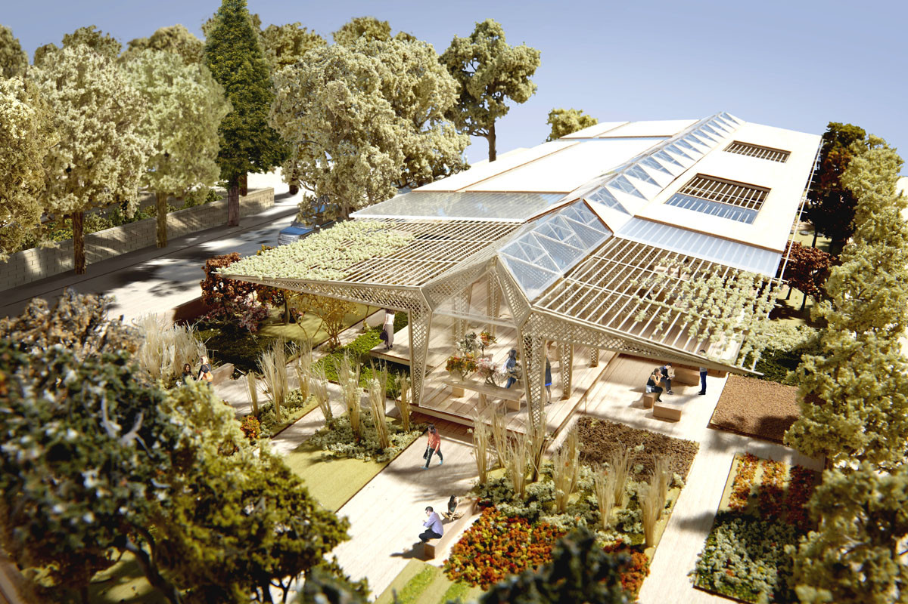

Aleksandra Lata
Technology & Design Researcher
Selected Work
About
Blog
☀expansive june wandering 2☀
☀expansive june wandering☀
☀restorative june creativity☀
Letter
Mystery Of Iniquity
Intuitive Beings
Creator Maria Popova
The Cultivation of Other
Artificial Intelligence at the University of Amsterdam
Jane Goodall
Polly Higgins

Breathtaking Maggie Centers via AnnMarie Adams
Annmarie Adams @ Pathways to Equitable Cities Research
Preserving History with Holly Rushmeier
Loving Kindness Meditation